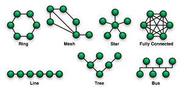

| Tipo | Definizioni | Immagini |
| Topologie Di Reti | Topologia a Stella
(I computer sono connessi ad un HUB centrale)
I computer sono connessi ad un componente centrale chiamato Hub. I dati sono inviati dal computer trasmittente attraverso l’Hub a tutti i computer della rete.
Questa topologia richiede un’elevata quantità di cavi in una rete di grandi dimensioni.
In caso di interruzione di uno dei cavi di connessione di un computer all’Hub, solo quel computer verrà isolato dalla rete.
In caso di mancato funzionamento dell’Hub, saranno interrotte tutte le attività di rete. Tra i vantaggi dell’Hub ci sono l’espandibilità (basta collegare un altro Hub all’Hub iniziale), controllo centralizzato del traffico sulla rete in base a led luminosi che permettono di diagnosticare se quel ramo della rete è funzionante.
Topologia ad Anello (I computer sono connessi tramite un cavo circolare privo di terminatori) I computer sono connessi tramite un unico cavo circolare privo di terminatori. I segnali sono inviati in senso orario lungo il circuito chiuso passando attraverso ciascun computer che funge da ripetitore e ritrasmette il segnale potenziato al computer successivo: si tratta quindi di una tipologia attiva, a differenza di quella a bus. Uno dei metodi usati per la trasmissione dei dati lungo l’anello è detto Token Passing, e si parla infatti di reti Token Ring. Il token (gettone) viene trasferito da un computer al successivo finché non raggiunge quello su cui sono disponibili dati da trasmettere. Il token viene modificato dal computer trasmittente che aggiunge al dato l’indirizzo del destinatario e quello del mittente e lo rinvia lungo l’anello. I dati passano attraverso ciascun computer finché raggiungono quello il cui indirizzo corrisponde a quello indicato sui dati. Questo computer restituisce un messaggio di conferma al computer trasmittente il quale crea un nuovo token e lo immette nella rete. Un token può percorrere un anello di 200m di diametro 10.000 volte al secondo, poiché viaggia alla velocità della luce. Nelle reti Token Ring, a differenza di altre, un computer malfunzionante viene automaticamente escluso dall’anello consentendo agli altri di continuare a funzionare regolarmente in rete. In altri tipi di reti ad anello, un computer che non funziona può provocare la caduta di tutta la rete. Topologia a Bus (E' il metodo più semplice di connettere in rete dei computer) E' il metodo più semplice di connettere in rete dei computer. Consiste di un singolo cavo (chiamato dorsale o segmento) che connette in modo lineare tutti i computer. I dati sono inviati a tutti i computer come segnali elettronici e vengono accettati solo dal computer il cui indirizzo è contenuto nel segnale di origine. Schema Topologia a Bus Poiché un solo computer alla volta può inviare dati, maggiore è il numero di computer connessi alla rete, più saranno i computer in attesa di trasmettere dati, rallentando le prestazioni dell’intera rete. Quella a bus è una topologia di rete passiva: i computer ascoltano i dati trasmessi sulla rete, ma non intervengono nello spostamento di dati da un computer a quello successivo. I dati trasmessi da un computer, se non vengono interrotti, viaggiano da un capo all’altro del cavo, rimbalzano e tornano indietro impedendo ad altri computer di inviare segnali. A ciascuna estremità del cavo viene applicato un componente chiamato terminatore che assorbe i dati liberi rendendo disponibile il cavo per l’invio di altri dati. Se un cavo viene tagliato o se uno dei capi viene scollegato, e quindi uno o più capi sono privi di terminatore, i dati rimbalzeranno interrompendo l’attività su tutta la rete (rete inattiva). E’ possibile espandere una LAN a bus con dei connettori cilindrici di tipo BNC che uniscono due capi di cavo ma indeboliscono il segnale (meglio usare un unico cavo lungo che più segmenti uniti fra loro). Oppure, si può usare un dispositivo chiamato ripetitore che potenzia il segnale prima di ritrasmetterlo sulla rete. Topologia a maglia Sono reti tipicamente geografiche in cui i nodi sono interconnessi tra loro per più di una volta, creando quindi percorsi alternativi per i dati nel caso di congestione o malfunzionamento di linea. La tolleranza ai guasti dipende dal numero dei canali implementati e naturalmente tale numero condiziona il costo della rete. Raramente si hanno reti completamente connesse, perchè estremamente costose, dato che il numero dei canali aumenta con legge quadratica rispetto ai nodi. Più frequentemente si hanno reti non completamente connesse, con un giusto compromesso tra costo e numero di connessioni. Topologia ad albero E' la topologia magliata con il minor numero dei canali e quindi potrebbe essere quella preferita per il cablaggio delle WAN, in quanto risulterebbe avere il costo di cablaggio minore. In realtà va considerato che nella rete ad albero la tolleranza ai guasti è inesistente e quindi si preferisce una rete magliata con un maggior numero di connessioni. |
 |